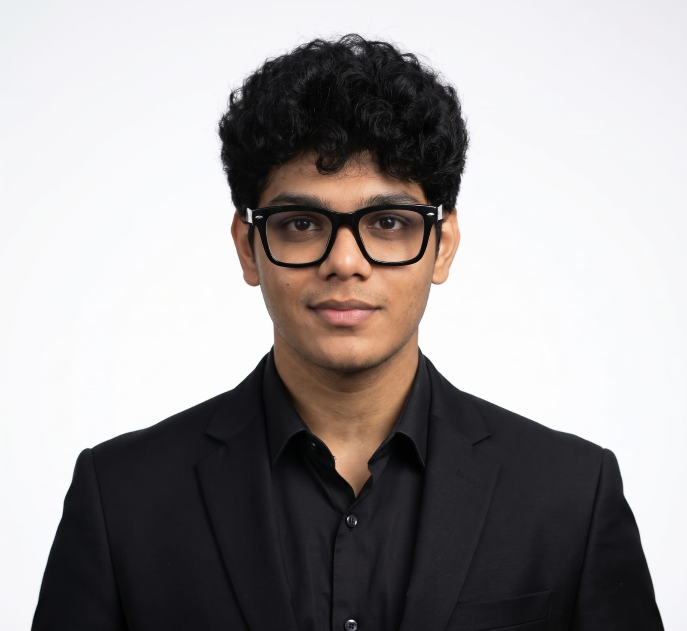

Education
Indian Institute of Management Bangalore
Digital Business & Entrepreneurship

Class XII (Commerce)
90%
Academic Rank: 2nd in School
Class X
93%
Academic Rank: 4th in School
Digital Business & Entrepreneurship
Indian Institute of Management Bangalore
CA Aspirant • IPMAT Aspirant

I am currently pursuing Digital Business & Entrepreneurship at the
Indian Institute of Management Bangalore. My academic interests lie
in business, finance, entrepreneurship, and management, where I enjoy
understanding how ideas, strategy, and execution come together to
create meaningful impact.
Alongside academics, I have actively participated in competitive
sports, leadership roles, event management, and Model United Nations
conferences. These experiences have strengthened my communication,
teamwork, resilience, and decision-making abilities while helping me
develop a balanced perspective on personal and professional growth.
Digital Business & Entrepreneurship
90%
Academic Rank: 2nd in School
93%
Academic Rank: 4th in School
State-Level Football Player (2022–23)
State Runner-Up • 100m Sprint (2023)
Captain • School Football Team (2022–25)
Academic Rank: 2nd in School • Class XII
Academic Rank: 4th in School • Class X
3rd Place • Model United Nations
Participated in 3 MUN Conferences
Over the years, I have organized 9 profitable city-level sports
tournaments and successfully executed 3 large-scale city events.
These experiences required planning, coordination, problem-solving,
and effective communication with participants, volunteers, and
organizers.
Working in dynamic environments has strengthened my leadership
abilities and taught me the importance of teamwork, adaptability,
and accountability in achieving successful outcomes.
I believe that meaningful growth comes from consistently stepping
beyond one's comfort zone. Whether it is competing on the football
field, organizing events, participating in Model United Nations
conferences, or pursuing academic excellence, every experience
provides an opportunity to learn, adapt, and improve.
As I continue my journey through business and entrepreneurship, I
aim to combine analytical thinking, leadership, and creativity to
contribute positively to the organizations and communities I become
a part of.
Finance • Entrepreneurship • Business Strategy • Football • Public Speaking • Event Management • Leadership Development
Nashik, Maharashtra